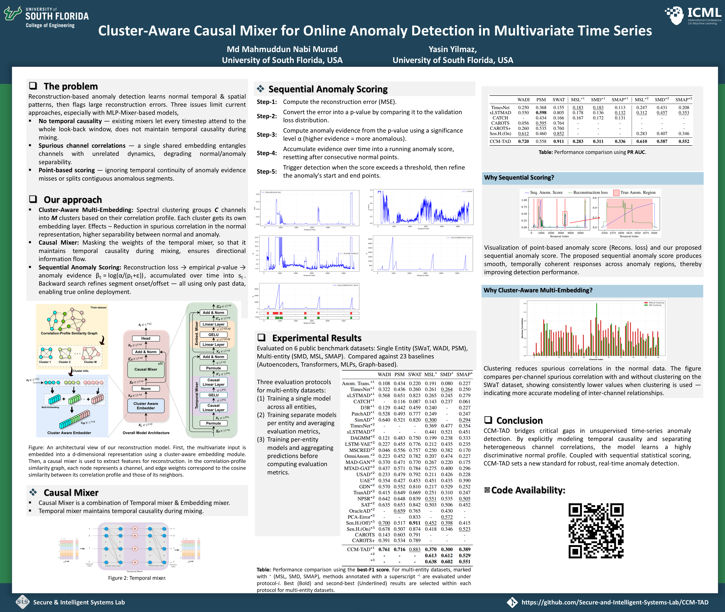
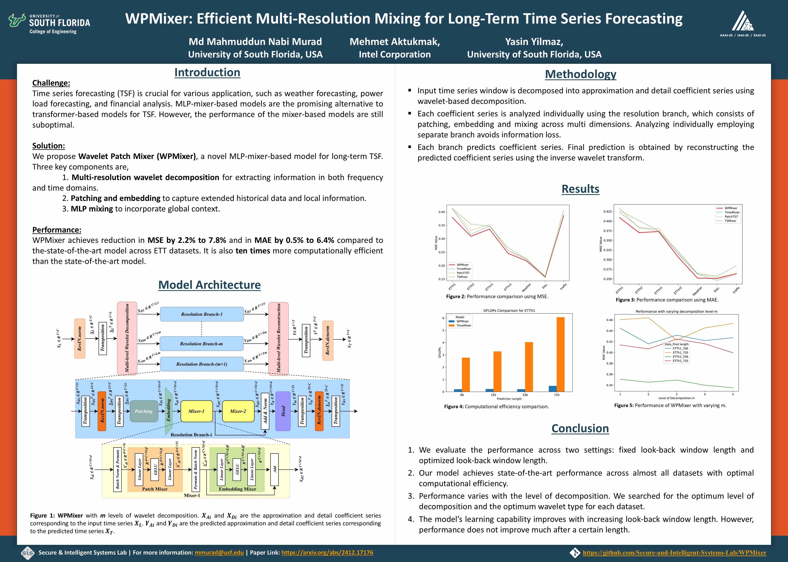

Machine Learning Researcher focused on advanced neural architectures such as Transformers, MLP-Mixers, and Graph Neural Networks. My work targets state-of-the-art performance for sequential learning, long-term forecasting, and robust anomaly detection under real operational constraints.
Professional Summary
Researching data-centric AI for real-world systems
Updates
News
Ocean Engineering (Q1 Journal)
Mix&Fix-Net: A Dual-Stage Trajectory Prediction Model for AIS and Vision-Derived Vessel Data.
ICML paper accepted
CCM-TAD accepted at ICML 2026.
Reviewer award
Recognized as a Gold Reviewer at ICML 2026.
AAAI paper published
WPMixer paper at AAAI 2025.
IEEE-WCNC paper published
Multi-Resolution Mixer Network for Localization of Multiple Sensors from Cumulative Power Measurements.
MaCVi paper published
Camera-based Intruder Detection and Monitoring of Ship Crew Work Hours.
Hackathon win
1st Place, M3 Hackathon.
Research and Publications
Flagship Projects

ICML 2026Cluster-Aware Causal Mixer for Online Anomaly Detection in Multivariate Time Series
We developed CCM-TAD to detect anomalies in multivariate time series. It groups sensors by how their readings relate to each other, so that unrelated sensors do not confuse the model's understanding of normal behavior. It also enforces a strict rule that each decision is based only on what has already been observed, with no information borrowed from the future. Rather than flagging each moment in isolation, it accumulates evidence over time to identify anomalies more reliably and to pinpoint exactly when they start and end.

AAAI 2025 Research Project
Research Project
Vessel Route Prediction using Web-stream Video of a Maritime Environment
We develop a novel model that can predict vessel routes using both AIS and non-AIS data. Non-AIS data is obtained from web-stream video feeds of maritime environments.
Career Path
Experience
June 2026 - Aug 2026
Time Series Machine Learning Intern
Schneider Electric, Andover, MA
Developing a global model to detect anomalies in the UPS (Uninterrupted Power Supply).
Aug 2023 - Present
Graduate Research Assistant
SISLab, University of South Florida
Developing efficient deep learning architectures for time-series analysis, environmental monitoring, and intelligent transportation systems.
Dec 2019 - Jul 2023
Protection Engineer
Power Grid Bangladesh PLC
Ensured grid stability through relay testing, control-system configuration, and fault analysis with practical Substation Automation Systems experience.
Academic Background
Education
Aug 2023 - Present
Ph.D. in Electrical Engineering
University of South Florida, Tampa, FL, USA
Track: Machine Learning & AI
GPA: 4.0/4.0
Aug 2023 - May 2026
M.Sc. in Electrical Engineering
University of South Florida, Tampa, FL, USA
Track: Machine Learning & AI
CGPA: 4.0/4.0
Feb 2015 - Apr 2019
B.Sc. in Electrical and Electronic Engineering
Bangladesh University of Engineering and Technology (BUET), Dhaka, Bangladesh
Major: Signal Processing
CGPA: 3.67/4.0
Recognition
Awards and Certificates
May 2026
GOLD
Recognized as a Gold Reviewer, placing among the top reviewers in ICML 2026
ICML 2026
Served as a reviewer for the ICML 2026 conference. Reviewed six papers in time series forecasting domain. Based on the quality of reviews, received recognition for outstanding contributions.
Nov 2024
Winner
Training
SIEMENS Protection Training
SIEMENS Power Academy | Germany
Participated in a comprehensive training program on power system protection. Gained hands-on experience with Siemens protection relays and control systems, especially DIGSI, 7SA6, 7SA8, 7UT6, 7UT8, and 7SS85.
Scholarly Work
Selected Publications
Full publication list on my Google Scholar
For the complete and up-to-date list of my publications, please visit my Google Scholar profile.